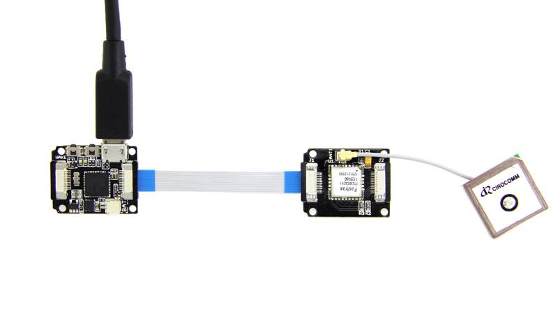
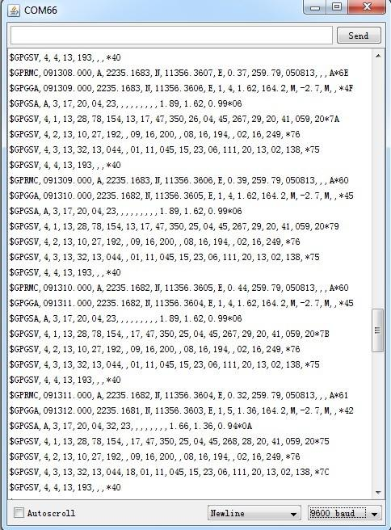
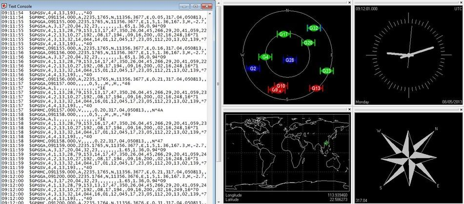

Xadow GPS is an OEM GNSS receiver module, including the Fastrax IT530M and a tiny 12mm squared ceramic patch antenna. The low power module outputs a series of standard NMEA format data which provides position, satellite information and time, etc. This module can be easily connected directly to Xadow Main board to display and record the above-mentioned information. It features acquisition and tracking capability of weak signals, making it a great choice for navigation projects.
There is an example showing how to read data from the GPS using software serial and sends it back out on the serial port.

Note: when connect Xadow GPS to Xadow Main Board, you should concern about the connection direction. The connection method is that the unfilled corner of one Xadow module need to connect to the right angle of another module(see four corners of each Xadow module).
#define SerialBaud 9600
#define Serial1Baud 9600
void setup()
{
Serial.begin(SerialBaud);
Serial1.begin(Serial1Baud);
}
void loop()
{
for(;;)
{
// copy from virtual serial line to uart and vice versa
/*
*/
if (Serial.available())
{
Serial1.write(Serial.read());
}
if (Serial1.available())
{
Serial.write(Serial1.read());
}
}
}

There is all the information about NMEA 0183 communication protocol. In fact, we only need to pick out the locate data, others can be ignored. The $GPRMC data is useful for us, Now let’s analysis its detail meaning:
$GPRMC,091308.000,A,2235.1683,N,11356.3607,E,0.37,259.79,050813,,,A*6E
091308.000－－means Greenwich Mean Time (the standard world time) 09:13:8 am. Standard time in Beijing is eight hours ahead of Greenwich Mean Time, so Beijing Time is 5:13 pm.
A－－means the data is valid, If the letter is V, which means $GPRMC data is valid.
2235.1683,N－－Latitude 22.351683 degrees.
11356.3607,E－－east longitude 113.563607 degrees.
0.37 -- means motion rate.
259.79－－means motion direction. the north is 0 degrees, east is 90 degrees, south is 180 degrees, west is 270 degrees.
050813－－means August 5, 2013.
We can also observe this data using u-center.
